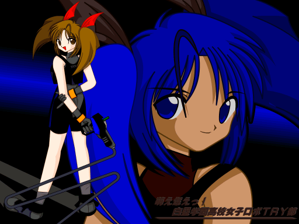
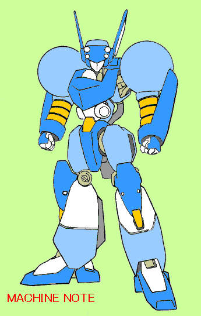
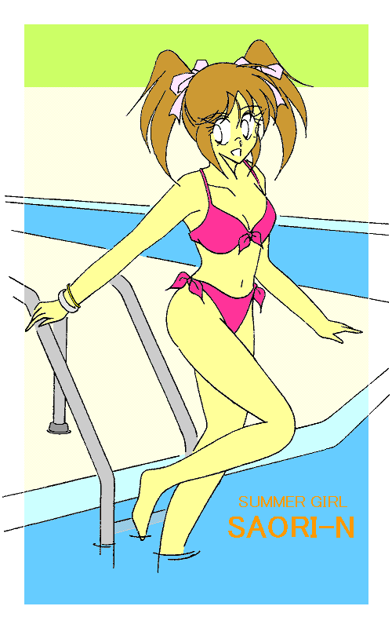

小学生プレイヤー出海正輝（の兄）のメガパペット。
トップヘビーな機体バランスのため、高い運動性と引きかえに転倒しやすい欠点を持つ。
どちらかというと中〜上級者向けの機種。
——萌え燃えっ！ 白塁学園高校女子ロボＴＲＹ部 episode
４——
好敵手（らいばる）は美少女っ
ＣＲＥＡＴＥＤ ＢＹ ＭＯＮＤＯ
（ＳＰＥＣＩＡＬ ＴＨＡＮＫＳ！ ｍｉｓｓｉｎｇさん）
アクチュエータ（人工筋肉）が、限界を訴えるかのように耳ざわりな音をたてた。
次の瞬間、ＴＸ−４４《マシンノート》の左腕部が力を失い、だらりと垂れ下がった。
肩口から漏れた潤滑剤が、まるで血のようにフレキシブルアームをつたって、指先から地面に落ちた。
トリガーのグリップを握りしめた甲介の手のひらに、汗がじっとりにじんだ。
「…………」
そしてその黒い影は、あたかも人間のようにゆらり——と頭部をめぐらせて……
甲介を “にらんだ” 。
〈ＰＨＡＳＥ：１〉
一週間前——
「おどろいたか飯綱甲介。今のはほんのめいしがわりのあいさつがわりだがこのていどのこうげきでたおれるような弱いやつはキラいだからひとおもいにと思ったがさすがは飯綱甲介、それでこそたおしがいがあるっ」
「……だから何が言いたいんだ、お前っ？」
こめかみに指を当て、甲介は迷惑そうにそうつぶやいた。
季節は初夏。……まさかこのクソ暑い中、しかも朝早くから校門の前で
“待ち伏せ” してるなんて誰が予想するというのだ。
「ちょっと甲介っ、いい加減あれなんとかしなさいよっ」
横から肘でそうこづいてくるのは、一緒に登校してきた幼なじみでクラスメイトの藤原ほのか。
そんなふたりの目の前には、全高三メートルの黒い人型が一体、校門を背にして立ちふさがっている。
メガパペット——競技用有線遠隔操作式人型有脚マニピュレーター。……だがそれは、ほのかが部長をつとめる女子ロボＴＲＹ（ロボット・トライアスロン）部と対立する、元祖ロボＴＲＹ部の備品メガパペット《パワーエリート》ではなかった。
詳しい者が見れば、それがＳＭインダストリー社のＭＭ−３７Ｒと呼ばれるものだと気付くだろう。
アメフト選手のプロテクターを思わせる胸部と肩部。それに対して極限までシェイプ（軽量化）された上腕と腰まわりが特徴的な機種である。
「…………」
登校中の生徒たちがひとり、またひとり何事かと足を止め、野次馬と化していく。
もっとも白塁学園高校において、メガパペットは珍しい代物ではない。しかし、その横に立つ小柄な人影に……
…………全員の目が点になった。
「飯綱甲介っ！ 三しゅうかん前のきさまとのけっちゃくを今ここでつけてやるっ！」
憎悪に満ちた視線。侮蔑に歪む口の端。
その手にラジコンプロポとパームトップコンピュータを組み合わせたようなトリガー（ロボット重機用有線操縦器）を握りしめ、そしてまわりを完全に無視し、高圧的な口調で言い放つ。
だが…………半ズボンだった（笑）。
どう見ても小学生だった。
華奢な体躯（たいく）に細い手足……おそらく四、五年生といったところか。目つきが鋭く、かなりこまっしゃくれた——というより神経質そうな印象がある少年だった。
おそらく学校では来客用トイレでないと用を足せないタイプだろう。
「あんなこと言ってるけど…………どーする、甲介？」「こっちがききたい……」
何処かの小説に、「初対面の人間を『貴様』呼ばわりする奴はサルの仲間だから、相手にしなくていい」
などという名言（？）があったが、あいにく甲介はこの少年とは初対面ではなかった。
実はしばらく前から、ずっとこんな調子で付きまとわれているのだ……。
甲介が目の前の少年に初めて出会ったのは、先月に蛇風呂（じゃぶろ）川の河川敷で開催された、メガパペット勝ち抜き格闘大会でのことであった。
一回戦で互いに相対することになったのだが、前日まで降り続いた雨にぬかるんだ地面で、少年は試合開始直後のダッシュに失敗して機体を転倒させ、一度も拳を交えないままマシントラブルで敗北を喫してしまう。
以来、彼はその時の対戦相手だった甲介を目の敵にしているのだ。
それも、かなりしつこく。
「戦いもせずのうのうと勝ち上がったきさまをぜったいたおす」「このボクがきさまなんかに負けるわけがない」「きさまにうけたくつじょくをばいにしてかえしてやる」……
なんでもそれまでずっと無敗を誇っていたらしく、連勝記録にあんな形で泥を塗った（と、少年は主張している）甲介を許せないらしい。
そもそも「許す」「許さない」なんて問題ではないし、不戦敗になったのはどう見たって自身の操作ミスである。
だが彼は、「甲介が全て悪い」と言い張ってはばからない。
リターンマッチと言えば聞こえはいいが、要するにお子ちゃまの勝手な逆恨み。
もちろん甲介に、応じる気など全くない。
「きさまなんかがこのボクの足元にもおよばないことを、今ここでしょうめいしてやるっ
……さあ、バトルのはじまりだっ！」
「あのなあ、メガパペットもなしにどーしろって——」
思わずそうつぶやく甲介に、少年はびしっと人差し指を突きつけてきた。「家に帰ってとってこいっ！」
「…………おい」
おそらく学校で忘れ物でもした時に、担任の先生にそう怒鳴られでもしたのだろう。
「——言っておくぞ飯綱甲介っ。ボクはきさまをみとめたわけじゃないっ！」
「いや別にお前に認めてもらわんでもいいけど……」
「ふっ。そのきんちょうかんのないせいかくで、よくこのせいきまつをいきのびてこられたものだっ」
「とうに過ぎてるぞ、世紀末は……」
「いいかっ！ メガパペットとプレイヤー（操縦者、競技者のこと）はつねにいっしんどうたいっ。
だからきさまにトリガーをにぎるしかくはないっ！」
「…………他人（ヒト）の話、完っ璧に聞いてないなお前……」
「——ここで今きさまにそれをおしえてやるっ！ さあ、さっさとメガパペットをよういしろっ」
「んなことできるわけないだろっ。オレは出席日数ぎりぎりなんだっ」
「自分かってなことばかり言うなっ！ きさまだけが学校にいってるわけじゃないっ！
ぎむきょういくのボクがわざわざこっちに来てやったんだっ。ぎむきょういくじゃないそっちがあわせろっ」
「朝っぱらからいきなりケンカふっかけるのは、“自分勝手”
じゃないのか？」
「うるさいっ！ 『ケンカ』じゃなくて『バトル』だっ！ うられたバトルはかうのがれいぎだっ！！」
「あんたポ〇モンのサ〇シくんか……」
無茶苦茶な理屈である。よっぽどあの試合結果を根に持っているらしい。
——だからって、メガパペットまで用意して学校の前で待ち構えるか普通っ？
「あ〜っと、……そういえばあたし今日、日直だったわっ」
甲介と少年のやりとりを黙って見ていたほのかが、唐突にぽんっと手を打った。
「おっと、オレも古典の課題コピーさせてもらわんと……」「それはそうと甲介、沙織ちゃん最近ちっとも顔見せてくれないけど…………どうしちゃったのかな？」
「え、え〜っと、ま、また近いうちにひょっこりあらわれるんじゃないか、な——」
ずんっ——!!
「むしするなっ、こらっ！」
わざとらしく会話しながらしれっと少年の横を抜けて行こうとする甲介とほのかの鼻先に、黒いメガパペットが大股で足を踏み下ろした。
「ち……ちょっと何するのよっ！ 危ないじゃないっ」
「うるさいっ！ にげようとした方が悪いっ！ それともこわくなったかツリ目女っ！」
語気を荒らげるほのかにトリガーの先を突きつけ、あくまで高飛車な態度をとる少年。
偉そうなその物言いに、彼女のさほど太くない堪忍袋（かんにんぶくろ）の尾がぶちぶちと切れていく。
「だっ、誰があ・ん・たっみたいな半白眼のお子ちゃまにっ！」
「ふんっ。そんなにこのボクにたたきのめされたいのなら、あとでゆっくりあいてしてやるっ」
「アソコに毛も生えてないガキが生意気なこと口走ってんじゃないわよっ！」
「え〜っアソコってど〜こ〜っ？ ボク子どもだからわっかんな〜いっ」
「そんなときだけガキんちょぶるなっ！」
「ふんっ。……ボクはバカにはようしゃしないしんらつなどくぜつかなんだっ」
「ぼっちゃんカットのチビ小学生がえらそ〜にっ！」
「いった〜っぼーりょくだあっ！ ツリ目女にぼーりょくふるわれた〜っ！！」
「誰がツリ目だっ！ ちょっとこづかれたくらいでぎゃーぎゃー騒ぐなっ！」
「うるさいだまれキン（菌）がうつる！ こっち見るな口きくなイキするな空気がクサるっ！」
「へ〜いつ空気が腐ったっていうのよっ？ なん時なん分なん十秒っ！！」
「…………おいほのか、小学生と同レベルで言い合いするなよ……」
カバンを振り回しながら中指立てて唾をとばす幼なじみの姿に、呆れ返ってしまう甲介。
「なんだとうっ」「あ、いや、その……ぐええっ…………」
すかさず振り返ったほのかが、間髪入れずに甲介の首を締めかけたその時——
「あっれ〜っ、まーくんじゃないどうしたの……？」
場違いなほどに能天気な声が響き渡り、少年は手にしていたトリガーを思わず取り落としかけた。
「——あ〜っやっぱりまーくんだっ。こんなとこで何やってんの？ 学校どうしたの？ 行かなくていいの？」
「…………」
にこにこと近づいてくる声の主——舞香に、その場にいた全員の視線が集中する。
「あ〜っ、これってお兄さんのメガパペットなんでしょ？ こんなに真っ黒けにしちゃってどーするのよまーくんっ」
「…………」
「ほんとにもっと大事にしなさいよっ。でないと貸してもらえなくなるわよまーくんっ」
「…………な……」
「あ、そうそうまーくんのお母さん元気？ こないだ会った時——」
「…………よぶな……っ」
「え？ どしたのまーくん？」
「うるさいっ！ まーくんまーくんとなれなれしくよぶなあああっ！！」
「でも、正輝（まさてる）くんだから『まーくん』…………あ、『てるくん』の方がよかった？」
「…………」
笑みを浮かべたまま首をかしげる舞香に、ヒクヒクと口元を引きつらせるまーくん……もとい、正輝少年。
しかし、あっという間に『近所のお姉さん（舞香だとそうは見えないのだが）に愛称で呼ばれる僕ちゃん（笑）』に堕ちてしまった自分を、いやが上にも自覚させられ——
「ま、まあいい。メガパペットのないきさまをたおしてもいみはないから、き……今日のところはみのがしてやるっ。
だがかんちがいするな。きさまのイキのねをとめるのはこのボクだっ！」
「…………」
吉〇新喜劇なんかでよくある、「今日のところはこれくらいで勘弁しといたるっ」に近いものがあった……。
傲然（ごうぜん）と肩をそびやかし歩き去っていく黒いメガパペットと少年——。
その背中を見送りながら、その場にいた誰かが脱力気味にぼそっとつぶやいた。
「…………なんで道交法違反でつかまらないんだ？ あれ……」
その日の放課後——
「おい甲介、今朝の小学生また来てるってよ」
中庭でクラスの男子たちにそう声をかけられ、甲介は飲んでいた抹茶オーレを盛大に吹き出した。
「ま……まじか？」
「あの黒いメガパペットと一緒に、正門の前で腕組んで立ってるんだとさ」
男子生徒のひとりがごていねいにも教えてくれる。甲介の顔の上半分にタテ線が入った。
今朝の一件が、脳裏をよぎる。
下手に今顔を合わせたら、そのまま家まで押しかけてくるかもしれない。
はっきり言って
「勘弁してくれぷりーず」である。
「は〜っ。なんの因果でオレのまわりって、こういうのばっか寄ってくるんだろう……」
どっと疲れた顔をして、誰言うことなくつぶやく甲介。
わけの分からん相手は女美川兄弟＆親子だけでけっこうだ。
もっとも彼らが目の敵にしているのは、未知のナノマシンの力で甲介が
“変身” した無敵（笑）の美少女文月沙織の方なのだが——
……それを知るのは甲介自身と彼の母親、そしてあのお師匠だけである。
「ま、なんかあったらまたよろしく頼むわ」「お……おいちょっと待て。な・ん・でっオレなんだっ」
肩を軽く叩いて去っていくクラスメイトたちに、思わず声を荒らげる甲介。するとひとりが振り向き、真面目（？）な口調で言い返してきた。
「だって “ご指名”
されてるの甲介だし、そもそもあの手の連中は、お前や藤原たちの管轄だろ？」
「誰がきめた、誰がっ！？」
女美川軍団とのからみで、いつの間にかそういうことになっているらしい。
もちろん、メカニック（整備担当）という名目で女子ロボＴＲＹ部に公然と出入りしている甲介へのやっかみもあったりする……。
「まあ、相手はお子ちゃまなんだし」「そうそう、てきとーに負けてやればいいんじゃないのっ？」
心にもないことを口々に言いながら、目がおもいっきり笑っていたりする。
そんな真似したら火に油をそそぐような結果になることなど、誰の目にも明らかだ。
——なんだかんだ言って面白がってるんじゃねーのか…………お前らっ。
クラスメイトたちの背中に恨みがましい視線を向ける甲介。
本音を言えば、高校生の自分が小学生相手にムキになるのがバカバカしい——いや、大人げない（というか、単に恥ずかしい）だけなのかもしれない。
そう……相手はあくまでも小学生の “お子ちゃま” である。
〈ＰＨＡＳＥ：２〉
「出海（いつみ）、正輝？」「うん。うちの近所に住んでる子だよ」
かなめの問いかけに、舞香がそう答えた。
女子ロボＴＲＹ部が部室代わりに使っている資料室での会話である。
現在ほのか（と、甲介）は高等部二年に、そして舞香、祥子、かなめの三人は中等部三年に進級している。
ちなみにあの筋肉ダルマこと女美川武尊は今年の春めでたく（笑）卒業し、四月からは大学生（……）になっているのだが、『特別名誉顧問』というご大層な肩書で相変わらず元祖ロボＴＲＹ部にかかわってきている。
結局状況は去年からちっとも変わっておらず、おかげで女子ロボＴＲＹ部はいまだに新入部員に恵まれない。
それはさておき——
「なんかね〜っ、地区のジュニアチャンプだって言ってたよ」
「……ほんとだ。ここに載ってる」
部屋の隅にあるパソコンでロボＴＲＹ協会（Japan Robotech Athletic Association 略称ＪＲＡＡ）の公式ホームページを覗いていた祥子が、舞香の言葉を受けてそうつぶやいた。
祥子の肩ごしに画面を覗き込むほのかたち。ディスプレイの左隅に、今朝の少年の顔写真が映っている。
出海正輝、市立富良永（ふらなが）小学校五年。甘水市ロボＴＲＹジュニア（小学生）クラスチャンプ——
ちなみにメガパペット競技資格には、年齢制限は特に設けられていない。
「確かにこの子だわ、うん」
「で、結局どんな子なの？ ユダヤ人陰謀説を力説したり、得体の知れない宇宙人とコンタクトしてるなんて主張したりしてるとか——」
「おいおいっ」
かなめのその問いかけに、呆れ返った声で答えるほのか。
そんな小学生は…………ちょっと嫌だ（笑）。
「えーっと公式試合の戦歴は三戦三勝……って、まさかこれがあの子の言う『無敗の連勝記録』なのかしら？」
画面を見ながら祥子がつぶやく。しかも一戦一戦パートナーが違う。
おそらくあの性格ゆえにダブルス組む相手がいなくなり、仕方なしにひとりでもエントリーできるローカルな勝ち抜き大会に出場してきたのだろう。
「……そういえばあの大会、ほのかお姉さまも飯綱先輩と一緒にエントリーしてたんですよね」
「まあね。今回はふたりともいいとこまでいったのよね〜っ」
ちょっと自慢げだが、実は四回戦で甲介ともども敗退している。
「で、その大会で飯綱先輩と対戦して、ぬかるみにメガパペットの足滑らせて
“自爆” したってわけか……」
「まあね。でも次の試合も詰まってたし、結局そのまま甲介が不戦勝になったわけ」
そう言いながらパソコンのマウスに手を伸ばすほのか。クリックすると画面が切り替わり、小学生チャンプ出海正輝のメガパペットが表示される。
ＳＭインダストリーＭＭ−３７Ｒ。機体の愛称は《リバースエッジ》。
しかし写真の中のメガパペットは真っ黒ではなく、ツヤ消しのシルバーに赤と青紫のストライプ（いわゆる『平成ウ〇トラマン塗り』）といった塗装であった。
兄貴の持ち物を完全に私物化し、甲介に
“負けた”
ことをきっかけに勝手に色まで塗り替えているのだ。
すると今日メガパペットを持ち出してきたのは、その塗り直しが終わったためか。
「ほんと、あのしつこさは普通じゃないわよね〜」
腕を組んでもっともらしく言うかなめ。「——例えば『対戦中に爆発に巻き込まれて、顔半分が焼けただれてしまった』とか、『攻撃を受けてよろめいた拍子に、そばにいた母親を自分の機体で踏み潰してしまった』とか、『負けたら一週間ピンクハウスのワンピ着て学校に来る約束をしてしまっていた』とかっていうヘビイな事情なんかがあるんだったらまだ分からなくもないけど……」
最後のやつで、シリアス度が急降下している（笑）。
「そうかな〜っ。あたしはどっちかというと、あの子が飯綱先輩への禁断の思いを隠すためにわざとあんな態度取っている——みたいな展開を期待しちゃうけどな」
「あ〜ん〜た〜ら〜はああああ……っ」
真顔でとんでもないことを言い合うかなめと祥子に、ほのかは思わず眉根を押さえた。
ただひとり舞香だけが話についていけず、口元に人差し指を当て、「はにゃ？」と首をかしげた。
小学生プレイヤー出海正輝（の兄）のメガパペット。
トップヘビーな機体バランスのため、高い運動性と引きかえに転倒しやすい欠点を持つ。
どちらかというと中〜上級者向けの機種。
白塁学園高校の校内には、時間帯によって完全に無人と化す場所や部屋がいくつか存在する。
例えば、土曜日の生徒会室。……あるいは、滅多に使われない講堂横のトイレ。
甲介がまわりをうかがいながら入っていったのは、すでに物置と化した多目的教室だった。
念のため、中にあった演説台の影に身を隠す。
「……よしっ」
そこに背をあずけて座り込み、上着を脱いでネクタイを緩めると、右の手首にはまったままになっている銀の腕輪に意識を集中する。
「——んっ！」
かすかな金属音をたてて、それが手首に密着する。
体内で待機状態にあるナノマシンがシグナルを受けて活性化し、甲介は反射的に身を固くして目を閉じた。
次の瞬間、変身が始まった。
全身の細胞の性染色体が、ＸＹからＸＸへと書き換えられる。
骨格が男性のものから女性のものへと置き換わり、それに合わせて身長や体型が変化する。
外性器が消失し、身体の中に子宮や卵巣が形成されて、そこから大量の女性ホルモンが分泌し始める。
同時に手足が小さくなり、胸にふたつの膨らみが生じてＹシャツの胸元を押し上げる。
髪が艶やかに伸び、だぶだぶになった服の袖から出ている指先が白く、細く変わっていく。
そして顔だちも男から女……少女のそれになる。
急激な細胞組み換えを繰り返していると、老衰が加速するのではないか——という柳田理〇雄氏ばりの鋭い指摘もあるだろう。
だが、彼——彼女の体内にインプラントされたナノマシンは、テロメアの役割さえも代行するのだ。
テロメア ［telomere］ 染色体の両端にある、細胞分裂の回数を決定する因子。いわゆる『命のローソク』。
甘酸っぱい不思議な刺激が全身を包み込み、お尻のあたりから身体の芯を突き抜けていく。
「——んんっ。……く、んっ……んあっ…………ん、あ……や…………あ、ああん……っ！」
声帯が細くなり、そこからもれた可愛らしい声が誰もいない廊下に響いた。
「…………」
教室のドアが静かに開き、中等部女子の制服を着たキャンディヘアの少女がそっと顔を覗かせた。
まわりに人影のないことを確かめ後ろ手にドアを閉めると、んっ……と軽い伸びをする。
それから改めて今の自分の姿を見直し、「へへっ、なんか久しぶりっ」とつぶやく。
スカートからすらりと伸びた脚。
丸みを帯びた柔らかなヒップライン。
長い髪をまとめた黄色のリボン。
そして、セーラー服の襟元を押し上げるＣカップの胸——。
「あ……」
さっきまで着ていた男子用の上着とズボンをかかえていることに気付き、甲介——いや、沙織は顔を赤らめながら、あわててそれを手にした紙袋の中へ押し込んだ。
「…………えへっ♪」
肩をすくめて舌を出し、そしてくるっ——と身をひるがえしてみる。
プリーツの裾（すそ）がふわっと広がり、お尻を覆ったショーツと胸を包むブラジャーから伝わるくすぐったい感覚に、手や足が自然と内向きに……女の子らしい仕種になっていく。
「んっ、あー、あー、…………お、オレ、あ、あ、あた、あ……あたし…………」
思わず声を出してみて沙織（甲介）は次の瞬間、顔を真っ赤にした。
——う〜っ。で……でもまあこの姿だったら、あのうっとうしいガキの真横を通り過ぎたって気付かれない……
……………………よな。
それ以前の問題だ（笑）。
しかし間の悪いことに裏門（通用門）は工事中。かといって校舎の塀をのり越えるなんて論外である。
「う〜ん、我ながらなんかく〜だらない理由で変身してしまったけど……………………ま、いいかっ」
窓に映った “女の子”
の自分に小首をかしげると、沙織はすました笑みを浮かべて廊下を歩きだした。
しかし、その十分後……
「そうっ。そこで右脚を引いてワン、ツーのコンビネーションっ！ ……相手をいつも自分の機体の正面に持ってくるっ。……そうそう、脚を使って！！」
沙織（甲介）は、何故かグラウンドでメガパペットを操縦していた。
「常に相手の先を読んで操作するっ。……あ〜っそんなタイミングで攻撃しても、カウンターくらうだけだって！」
ひょいと顔を覗かせた資料室——もとい、女子ロボＴＲＹ部部室で、「や〜んさおりん久しぶり〜っ」なんて全員に声をかけられ、そしてなし崩し的に臨時の部活動に参加することになってしまったのである。
「む〜っ。どうしてもワンテンポ動きが遅れるう〜っ」
「じゃあ、組み打ちはひとまず置いといて、今度はオレ……あたしの機体の動きを真似してみてっ」
「うんっ」
なんだかんだ言っても、積極的に取り組んでる沙織であった。
後ろの方から「さっおり〜んっ！」なんて声をかけてくる男子生徒たちには閉口だが（……）。
ちなみに彼女が操縦しているのは、女子ロボＴＲＹ部の備品メガパペットＭＡＶ−２７《まりおん》。相対するもうひとつの機体はほのかが個人所有しているＴＸ−４４《キャロット》なのだが、今トリガーを握っているのは舞香である。
実は三人娘の中で一番ニブそ〜に見える彼女が、一番プレイヤーとしての適性が高いのだ。
「……よお〜し。いつでもいいよっ、さおりんっ！」
アクチュエータ（人工筋肉）の伸縮音とともに、二体のメガパペットが肩を並べた。
ステップを踏むようにマヌーバリング（機動）を始める沙織の機体。舞香の操る《キャロット》は、その動きに上半身をふらつかせながらも必死についてこようとする。
メガパペットの操縦は、基本になる動作——例えば歩く、しゃがむ、ダッシュ、左右の腕を動かす等——をいくつか組み合わせることで成立する。今、沙織が舞香と一緒にやっているのは、「相手がこう動いたら、こう応じる」という、空手の
“型” に似た動きの組み合わせパターンなのだ。
まずは自分のイメージした動作が、ちゃんとできるようにならないと始まらない。
「じゃあ、今のタイミングでもう一度、今度はひとりでやってみて」
「う……うんっ」
真剣な表情を浮かべてトリガーを握り直す舞香を見て、ちょっと前までは動かすたびに転倒させてたのがウソみたいだな……と思う沙織の中の甲介。根が素直な舞香は、沙織（甲介）やほのかの持つメガパペットの操縦テクニックをどんどん自分のものにしていっている。
——それにしても、舞香とあのガキが知り合いだったとはね〜っ。
とは言うものの、あれ以上何かが新たに分かったというわけではない。
「……ま、いいか。今のオレ…………じゃなくってあたしは
“沙織” だもんね〜っ♪」
沙織のあたしはあのガキとは一度も会ったことないもんね〜っ——と、機体を後ろに下がらせながらつぶやく。
「《まりおん》の調子はどう？ さおりん」
モーターツール片手に、横からかなめが尋ねてくる。
「う〜ん、特に問題ない…………あ、ちょっと右肘の制動が甘いか……な」
「そういえば、飯綱先輩もそんなこと言ってたっけ……」
最近かなめは “甲介”
にくっついて、機体の整備をあれこれ手伝ったりするようになった。彼女は彼女なりに、チームの中での自分の役割を見いだそうとしているのだ。
彼女たちの後ろでは、ほのかと祥子がクリップボードをのぞき込みながら話し合っている。おそらく今度の競技会のエントリーに関することだろう。
「……祥子もかなめも、がんばってるんだ…………」
「な〜にマジなってんのよっ、さおりんっ」
照れ隠しなのか、「このこのっ♪」といった調子でじゃれついてくるかなめに、沙織が笑みを返したその時——
Ｑｕｉｃｋｌｙ！ Ｑｕｉｃｋｌｙ！！
Ｆｏｕｒｔｈｇａｔｅ，ｏｐｅｎ！ Ｆｏｕｒｔｈｇａｔｅ，ｏｐｅｎ！
「ぬおおおお〜っ!! わ〜たしが元祖ロボＴＲＹ部名〜誉顧問っ、女美川武尊であああある〜っ！！」
テニスコートが真っ二つに割れ、その下から武骨なデザインのメガパペットが……
Ｒｅａｄｙ！ Ｒｅａｄｙ！ Ｒｅａｄｙ ｔｏ ｓｔａｒｔ！！
Ｅｎｔｅｒ ｉｎ ｗａｔｅｒｇａｔｅ，ｏｐｅｎ！ Ｅｎｔｅｒ ｉｎ ｗａｔｅｒｇａｔｅ，ｏｐｅｎ！
「とうりゃあああ〜っ!! ゆくぞっ！ ばんがいおおお〜っ、あああ〜るっぶいすりゃああああああっ！！」
プールの水が渦を巻き、その真ん中からドリルとウイングが目立つメガパペットが……
Ｅｍｅｒｇｅｎｃｙ！ Ｅｍｅｒｇｅｎｃｙ！！
Ｓｃｒａｍｂｌｅｇａｔｅ，ｏｐｅｎ！ ｒｅａｄｙ．．．．．．Ｅｊｅｃｔ！！
「小娘ええええええ〜っ!! 女美川家の嫁は姑（しゅうとめ）に絶対服従さますううううう〜っ！！」
そして体育館の壁を突き破り、シラミがそのまま巨大化したようなバイオメック（生物機械）が出現する。
次の瞬間、その場にいた全員が「またか」という表情を浮かべた……。
「さ……さおりんっ！」「舞香っ、さがってろっ！」
すかさず戦闘モードに切り替わった沙織が、ケーブルをしならせトリガーを引き絞る。
土煙を上げ突っ込んでくる二体のメガパペットと、一体のバイオメック。
……そして、その操縦者たち。「ぬおおおおっ！ 突貫であああああ〜るっ！！」
「やかましいっっ！！」
《キャロット》を押し退けるようにして前に出た《まりおん》は、ショルダーチャージを仕掛けてきた元祖ロボＴＲＹ部備品メガパペット《パワーエリート・改》を見切りでかわし、すれ違いさまにその左肩へ掌底を放った。
横からの一撃に全速力で突っ込んできた《パワーエリート・改》はバランスを崩してたたらを踏み、同じく長剣を振りかぶって突進してきた非常識カスタムメイドメガパペット《バンガイオーＲＶ３》と絡んで転倒、機体に引きずられるように走ってきた女美川兄弟は、いきおい余って某ビールのＣＭで焼肉を取りそこなった俳優の某Ｙ崎氏のように、大股広げて空中をでんぐりかえっていく。
「……まずは二体っ！」
間髪入れずに機体をダッシュさせる沙織。そしていきなり間合いを詰められて一瞬動きを止めた女美川重工試作バイオメック《デカプリオンくん初号機》の鼻先に、《まりおん》の右マニピュレーターを繰り出した。
し・・・・・・・・・・・・しぎゃあああああああ〜っ!!
対《デカプリオンくん》用お師匠様特大生写真（笑）を突きつけられ、悲鳴じみた咆哮を上げる生物機械。
そしてビデオの逆回しのように飼い主……もとい、女美川の母のそばへと後ろ向きに逃げ戻ってくると、八本の脚を折り曲げてうずくまり、恐怖（？）のあまりその場でいきなり脱糞する。
「…………」「…………」「…………」「…………………………………………」
沈黙がその場を支配した。
ウ〇コするバイオメック。……見たくない光景である。
そして——
「「うっ・・・・・・・・・・・・ぎゃあああああああ————————っ!!」」
鼻からお脳を直撃する異臭に、沙織やほのかたちはもちろん、その場にいた全員が蜘蛛の子を散らすように逃げ出した。
あとに残されたのは折り重なって気絶している女美川兄弟と、例によって現実逃避しぶつぶつうわ言をつぶやく女美川の母……
そして彼女は唐突に「うっ」と短く声を上げ、泡を吹いて失神する。
においをもろに吸い込んだらしい。
「ぎゃああああっ！ ま……真っ正面から見ちゃったああああ〜っ！！」
「うげええええすっぱ臭せええええ〜っ！！」
「ぐっ、ぐばあああああっ、かっ、身体がししししびれるうううううっ！！」
「ふははははっ、風下に立ったがうぬの不覚よっ」「…………余裕あるな、お前……」
阿鼻叫喚（笑）のグラウンド。鼻や目を押さえて悲鳴（？）を上げ逃げまどう生徒たち。
だが、その流れに逆らうように、ひとり金縛りにあったかの如く立ちつくす正輝少年の姿がそこにあった。
校門でじっと待ってられず、甲介との決着をつけんと校内にずかずか入ってきたのである。
しかし……
「おいっ！ いまここできゅうがたのメガパペットをドライブしていた、あの女のこはだれだっ！！」
「さ……さおりん、…………文月沙織ちゃんだっ」
いきなり手首をつかまれて引き止められた男子生徒はそう言い捨てると、三白眼でにらみつけてくる少年の手を振りほどき、鼻をつまんであわてて逃げ去っていく。
「沙織…………さおりん、か……」
うわ言のようにつぶやく正輝。
そう、正輝の頭の中には今、甲介のことなどこれっぽっちもなかった。
今の彼の網膜と右脳には、目の前のグラウンドで三体の敵と華麗（笑）に渡り合っていた美少女の姿だけが、しっかり焼きついてしまっているのだ。
——はっ！ な、なんだっ？ なんだこのむねにこみあげてくるものはっ？ なんだこのイキぐるしさはっ？
ボクは…………ぼ、ボクはいったいどうしたという……ん、だっ？
うっ！ ま……まさか…………まさかこ……これが…………こ、……こ、……こ…………
……………………………………………………………………………………
…………………………………………
……………………
何やら盛大に勘違いをしたまま、正輝少年はグラウンド中にたちこめた異臭に当てられ気絶するのであった。
「あ〜っひどい目にあったっ」
そうぼやきながら、沙織は紙袋を持ったまま大きく伸びをした。
「ごめんね沙織ちゃん、最後まで片づけ手伝わせちゃって」「えっ？ あ——き、気にしないで、ほのか……さん」
すっかり遅くなってしまい、あたりは徐々に暗くなり始めていた。
舞香たちを先に帰らせて後始末を終えた沙織とほのかは、足早に校舎をあとにする。
ほとんどの生徒が下校し、グラウンドでは元祖ロボＴＲＹ部の部員たちが、半泣きになりながら《デカプリオンくん》のウン……もとい、排泄物を回収、処理している。
「……うげ」
まだ少しにおってくる。沙織（甲介）は思わず顔をしかめた。
女の子の時は、ちょっとしたにおいにも敏感になってしまうのである。
ちらっと目を向けると、失神した部員がまたひとり安全地帯へと引きずられていくのが見えた。
「ペットのフンの始末は、飼い主の義務だよな……」
「ついでにその飼い主自身も、放し飼いにしないでおいてほしいわよね〜っ」
ハンカチで鼻を押さえ、不毛（笑）な作業を続ける連中を横目でにらみながら毒づくほのか。「……おまけに甲介のバカはこんな時に限っていなくなるし…………ほんと、使えない奴っ」
「で、でもそれは、その、ほらっ、あのガキ——じゃなくて今朝の小学生の子がうっとうしくて、それで先に帰っちゃったんじゃ……」
しどろもどろにそう弁解（？）しながら、沙織はグラウンドを迂回して校門の方へ行こうとする。
だが、その時彼女の目の前に、小柄な人影が突然ばっ——と立ちふさがった。
「文月沙織、……だな？」「……！」
いきなりそう声をかけられ、沙織（甲介）は思わず半歩下がってしまう。
——ばっ、ばっ、ばっ……………………ばばばばばばばばばっバレたんかあああ〜っ！？
「…………」
全身からどどどどっ——と早送りで汗を流す沙織を、じっと見つめるその人影。
『説曹操 曹操就到（曹操の話をすると、曹操自身がやって来る）』
女美川親子ともども病院に搬送され、点滴受けて戻ってきた出海正輝少年であった。
まだこころなしか顔色が悪い（笑）。
「ち…………ちょっとあんたっ！ 甲介だけじゃなく沙織ちゃんにまでケンカ売る気っ？」
沙織をかばうように前に出て、今朝の続きとばかりに怒鳴りつけるほのか。しかし彼はほのかを完全に無視すると、やにわに沙織の手を取りその顔を見上げた。
「な……何？」
思わず身をよじり、その手を振りほどく沙織。
だが、正輝は彼女の顔じっとを見つめ、そして…………きっぱりと言い放った。
「ボクの…………このボクのこいびとになれっ、沙織いいいっ!!」
次の瞬間、ぼごっ！ ……という鈍い音があたりに響いた。

〈ＰＨＡＳＥ：３〉
『このあとは『名探偵レオナ』っ！ 犯人は……お前だにゃっ！！』
『ハア〜イ、ワッタシガ謎ノ日系人ッ、ハーン・ニンワ・大前田デエエエエエエエッスッ！！』
『およびでないにゃっ！！』
……と、番組宣伝をする眼鏡ネコ耳娘と怪しげな外国人タレントの頭上に、ニュース速報のテロップが重なった。
“甘水市の高校での異臭騒ぎ、女美川重工本社は関与を否定。”
「あ…………あら沙織ちゃん、お帰り」
朝 “息子” だった我が子が、“娘”
の姿で家に帰って来たくらいで動じるような母親ではない。
「遅かったわね。学校でまた何かあったの？」
しかし、沙織は「ただいま」も言わずに靴を脱ぎ捨てると、しかめっ面のままリビングを大股で横切り、肩をいからせてキッチンを通り抜け、そして階段をどすどすと上がっていく。
階下にどたんっ——とドアを乱暴に閉める音が大きく響き、母親は見るとはなしに見ていたテレビから目を離すと、心配そうな表情を浮かべて二階をうかがった。
「あらやだ。……また生理かしら？」
そして次の日の早朝——
「飯綱甲介っ！ なぜきさまがここにいるっ！？」「…………」
玄関を出た途端、いきなりこれである。
殺気だった視線を向けてくる半袖半ズボン姿の男子小学生に、甲介は怒りより先に頭痛と脱力感をおぼえた。
まわりに他の人影がないのが、せめてもの救いかもしれない。
「『他人（ひと）の迷惑』って考えたことあるか？ ……おい」
「しつもんしてるのはこのボクの方だっ。答えろっ、なぜここにいるんだっ!?」
「……もしかしてお前、朝飯喰ってないだろ。
学校で習わなかったか？ ちゃんと朝食べないとキレやすくなるって——」
「ごまかすなっ！ なぜこの家から出てきたっ！ 答えろ今すぐにっ！！」
「何故もくそもあるかっ！ ここはオレんちだっ！！」
「ウソつけっ！ ここは…………ここは沙織の家だああああっ！！」
「……………………は？」
予想外の台詞に、甲介の思考が一瞬フリーズした。
「言えっ！ きさまなぜ沙織の家からでてきたっ!? 沙織といったいどういうかんけいだっ!?」
自分より上背のある甲介の襟首をつかみ、正輝はヒステリックにくってかかってくる。
どうやらあれからストーカーよろしく（もちろん本人にそんな意識はない）、きっちりあとをつけてきたらしい。
「沙織沙織——って、気安く呼び捨てにするなああっ！」
その手を力一杯ばしっと払いのけ、逆に締め上げる甲介。
朝早くからこんな調子で難癖つけられたりしたら、誰だって頭にくる。
それに加えて、沙織の自分がこの自意識過剰他人見下し少年の恋愛対象にされているということが、心情的にも生理的にも耐えられない（……）。
「……ふんっ、ことばでかなわないからぼ〜りょくかっ」
小学生にしたり顔で言われると、無茶苦茶腹がたつ台詞である。
「先に手出してきたのお前だろがっ。だいたい未練がましいぞっ、グーで一発殴られた奴がっ」
「あれはこくはくされてはずかしがってただけだっ。そんなこともわかんないのかこーこーせーのくせっ！」
甲介の手を払いのけ、襟元を直しながら鼻で笑う正輝。その口調といい、上目づかいに見上げたその表情といい到底小学五年生のものとは思えぬほどふてぶてしい。
「だっ誰がお前なんかに照れるかっ！ 誰がっ！」
「きさまが言うなっきさまがっ！」
「やかましいっ！ いいかっ、オレと沙織は…………」
そこまで言って、一瞬言葉に詰まる。
もちろん、同一人物だっ——なんて言えるわけがない。
甲介はコンマ三秒で考えをまとめ、そしておもむろに言い放った。
「——つまり沙織は、オレの…………妹だっ！！」
な……………………………………………………………………………………なにいいいっ!!
一応設定（笑）では『妹』ではなく『遠縁の親戚』なのだが、そこまで細かく説明する気など甲介には全くない。
それまで “俺様”
な態度で甲介にくってかかっていた正輝は、その顔を一気に青ざめさせると、いやいやをするように首を振りながらよろめくようにあとずさっていく。
「そんな…………ボクの……ボクの沙織が…………」
「こらあああっ！ いつ誰が『お前の』になった！」
口元をわなわなと震わせる正輝少年に、間髪入れずつっこむ甲介。
「……どうして…………あああど——どうしてよりにもよってこんなやつの妹なんだ…………」
しかし正輝はその声を完全に無視して、虚ろな視線を宙にさまよわせ呆然と立ちつくす。
「——ははは、そ……そうだ、そうだウソだウソにきまってる…………ウソなんだそうだウソだだまされてるんだボクは……」
「……じゃあ同じ家から出てきたことの説明はどうつけるんだよっ」
「！！」
甲介のその一言に、正輝の肩がびくっ——と上下した。
言われてみれば、雰囲気やトリガーを握っていた時の目つきがよく似ている……ような気がする。
「……う、うううウソだ…………ウソだウソだウソだウソだウソだウソだウソだあああああああ〜っ!!」
次の瞬間、彼は頭をかかえて絶叫すると、全速力でその場から駆けだしていった。
「ちょっとこうちゃん、朝から家の前で何騒いでるのよ？」
「話せば長くなるんだけど、…………いわゆる『人間関係のもつれ』ってやつかな……」
「……？」
沙織があいつの妹…………沙織があいつの妹…………あいつの……あいつの妹……………………
朝からずっと、それが頭の中でリフレインしている。
どうやって学校まで来たのか、それすらよくおぼえていない。
もちろん朝食も食べていない。
富良永小学校、五年二組の教室——。筆箱に入っていた三色ボールペンを無意識に分解しながら、正輝少年はずっと物思い（？）にふけっていた。
「出海さんっ（男女共生教育とやらで、男子児童にも『さん』をつける）、先生の話聞いてますかっ」
「…………」
担任の先生（女性）が呼びかけてくるが、もちろん全く聞いていない。
「教科書五十七ページっ、早く開きなさいっ」
「…………」
「そんな風に勝手なことしてたら、他のヒトにも迷惑ですっ」
「…………」
のそのそと教科書を開く正輝。先生の言うことに従ったのではなく、単に怒鳴られるのがうざったくなっただけだ。
そして再び授業を無視して、机に頬杖をつく。
我慢できない。……いや、認められない。
沙織があの飯綱甲介の妹……いや、あいつが彼女の
“兄” だということが。
「…………」
今この瞬間大地震が起こって、あいつだけ建物の下敷きになって死ねばいいのにっ——とさえ思う。
担任が耳元でまた何かがなりたてているが、知ったことではない……
「…………！！」
その時正輝少年は、はたと気付いた。
「沙織……………………文月沙織…………文月…………って、みょうじがぜんぜんちがうじゃないかっ！！」
いきなり机に手を叩きつけて立ち上がった正輝に、何事かとクラス中の視線が集中する。
「そ、そうかっ……………………そういう…………そういうことだったのかっ…………」
眉をつり上げ、口元をわなわなと震わせてうわ言のようにつぶやく正輝。
怒り顔とも笑い顔ともつかないその形相に、まわりの児童は思わず机ごと引いてしまう。
この瞬間、正輝の心の中では恐るべき妄想が……………………暴走していた（笑）。
『しゅくだいはかどってるかい、沙織ちゃん（←棒読み）』
『あ、甲介おにいちゃん（←棒読み）』
『ちょっときゅうけいにしないかい？ こうちゃいれてあげるよ（←また棒読み）』
『うん、ありがとう。……ごくごくごく。……あれれ？ なんかへん。からだがあついよう（←さらに棒読み）』
『ふっふっふっ、くすりがきいてきたな（←これも棒読み）』
『え、なに、なにかはいってたのこのこうちゃ？（←とにかく棒読み）』
『もうおそい。……どんっ（←効果音も棒読み）』
『きゃあ。か、からだがしびれてうごけないっ（←悲鳴も棒読み）』
『くっくっくっ、にやりっ（←笑い声も棒読み）』
『な、なにするのおにいちゃん（←しびれているはずなのに棒読み）』
『ふっふっふっ、沙織のしょじょをもらうのさ（←しつこく棒読み）』
『いやっ。やめてわたしたちきょうだいよっ（←やっぱり棒読み）』
『うるせえっ。……びしばしびしっ（←されど棒読み）』
『ああっ、いたいっ（←まだまだ棒読み）』
『ちなんかつながってないのにいまさらなにをいう。……びりびりびりっ（←とことん棒読み）』
『ああっ、いやっ、やめてーっ（←それでも棒読み）』
『へっへっへっ、いいからだだぜ。……沙織っ、おまえはおれのものだああっ（←どこまでも棒読み）』
『いやー、だれかー、たすけてーっ。…………あ（←最後まで棒読み）』
紅い薔薇の花びらが一枚、ぽとりと落ちる——。
「…………ゆるさない……………………ゆるさないぞ飯綱甲介っ！！」
自分でこしらえた「血のつながらない妹を襲う義兄」の物語に憎悪を増幅させ、血走った目で机の上の一点を見つめてつぶやく正輝少年。
こんな彼を…………担任教師ははっきり言って持て余している。
さらに次の日——
「……なんだこれは」
校門のまわりにべたべたと何枚も貼られたＡ４サイズのはり紙に、甲介の目が点になった。
——告——
明日、この場所で
超バカウジムシ人間以下のバイキン野ろう飯網甲介をほうむります
にげるなよ
綱の字が “網” になっていた（笑）。
「これってやっぱ、『中傷ビラ』ってやつよね……」
呆れ返った口調でほのかがつぶやいた。「甲介、あんた相当恨まれているわよ。……またなんかやったの？」
「……オレにきくな」
短くそう答えながら、甲介は手近な一枚をむしり取った。
署名はないが、誰が書いたかは一目瞭然だ。
しかし、中傷ビラというよりは何処ぞの犯行声明文に近いうすら寒さをおぼえる文体だった。
『サイコパス』という単語が脳裏をよぎった。
登校してきた生徒たちが校門のところで一瞬足を止め、怪訝な表情を浮かべ、そして甲介の顔をちらちらと盗み見ていく。
「……で、どうするの？ これ？」
「ほっときゃいいって。……バっカバカしいっ」
口元をひくひくいわせながらも、つとめて平静をたもとうとする甲介。
もっとも付き合いの長いほのかには、その表情の微妙な変化から内心のいらだちが手に取るように感じられた。
——いつか何処かの競技会で出くわしたら……その時にきっちりシメてやるっ。
自分に言いきかせるようにそうつぶやくと、甲介は手にしたはり紙を握りつぶし、校門をくぐろうとした……
「お〜ろか者おおっ!! ちょ〜戦に背を向〜けるとは、げんごど〜断っっ!!」
なんの脈絡もなく、甲介たちの目前にぬっ——と出現する汗臭い影。
「いい〜づなこ〜すけええっ！ せ〜んしたる者、敵に後ろを見せてに〜げるものではぬわあああ〜いっ！！」
胸筋にぴちっとはりつくモスグリーンのランニングに、迷彩柄のアーミーパンツ。
言わずと知れた、筋肉ダルマこと元祖ロボＴＲＹ部
“元” 部長、女美川武尊であった。
「い……いきなりわいて出てくるなああっ！！」「ああああんたには関係ないわよっ！！」
ぐぐっと暑苦しい顔を近づけてくるマッチョな巨漢に、たじろぎながら言葉を返す甲介とほのか。
体感温度が五度ほど上昇する。真夏日には絶対顔を合わせたくないタイプの人間である。
ちなみに『言語道断』は、「げんごどうだん」ではなく、「ごんごどうだん」と読む（笑）。
「なああ〜にを言う〜っ。ロボＴＲＹが〜らみであればわ〜たしの出番ではな〜いかああ〜っ！」
呼ばれてとび出てあぱらぱ〜っ——てなノリで、ぐぐっと胸を張る女美川元部長。
「見よっ！ 若干小学五年生の身であ〜りながらっ、か〜くもせ〜せ〜ど〜ど〜たるちょ〜戦状を掲げ合いまみえんとする…………その意気やよおおおお〜しっ！！
わ〜たしは今っ、むお〜おれつにくわんどおおお〜しているっ！！」
はり紙をびしっ——と指さし、すさまじい形相を浮かべながら何故かいきなり滂沱（ぼうだ）する。
「…………これの何処が挑戦状だ？」
しかしトリップしている女美川元部長に、甲介のツッコミは全く通じなかった。
「みな聞け〜いっ！！ こ〜の戦いっ、我が白塁学園高校元祖ロボＴＲＹ部が仕〜切るううっ！！」
「「勝手にきめるなあああああっ！！」」
思わずユニゾンで叫ぶ甲介とほのか。
だが、女美川元部長はふたりの方に向き直ると、にがっ——と歯をむき出した笑みを顔に貼りつかせ、
「ま〜かせろっ。男と男の勝〜負、我らがさ〜いごまで見〜届けてくれよううっ！」
グローブみたいな手のひらで、甲介の両肩をばしばしと連打した。
「け…………結構だっ!!」
しかし、まわりの生徒たちはみな、「あとはまかせたっ」という眼差しで甲介を見るのだった。
その日の放課後、「ど〜れ、け〜こをつ〜けてやろ〜うっ」などと有難迷惑なことを口走る筋肉ダルマから逃げるため、甲介はまたまた沙織に変身した。
「…………と、いうわけで甲介の奴、結局あの小学生とメガパペットで決着つける破目になっちゃったのよ」
「ふ、ふうん、そ…………そうなんだ——」
知らんふりってのも、気いつかうなあ……などと思いながら、昨日同様セーラー服姿になった沙織（甲介）は、自販機の前に立つほのかにあいづちを打った。
カフェ・オレのブリックパックを受け取り、中庭のベンチに腰を下ろす。
「まあ、遅かれ早かれ白黒つけなきゃならないんだろうけど。……やっぱ、心配？」
「う、うん…………あ、いや、そ……そんなこと、ないけど……」
後ろに立ち、覗き込むように問いかけてくるほのかと目が合って、沙織は思わず赤面する。
「大丈夫っ。もし甲介が負けそうになったら、あたしが《キャロット》で乱入して——」
「…………」
むっとする沙織（甲介）を尻目に、ほのかはひとりテンションを上げ拳を握りしめる。「……乱入したついでにあのガキの半ズボン引きずり下ろしてやるわっ！！」
「……おいおい」
こいつならやりかねん——と思う沙織（甲介）。
「だから心配しなくていいわよ、沙織ちゃんっ」「あ、う……う、うん……」
がしっ、と両肩をつかんでくるほのかの気迫にのまれ、沙織はかくかくと首を縦に振った。
「そうだしんぱいいらない。沙織につきまとうウジ虫はこのボクがしまつしてやる」
「そうそう始末して……って、違うっ!!」
いきなり割り込んできたその声に眉をつり上げ、鋭く振り返るほのか。
しかし次の瞬間お尻を思いっきり蹴りとばされて、彼女は頭から芝生に突っ込んでしまう。「……ぐぼべっ！！」
「ふんっ、お前みたいなどんくさい女にズボンおろされてたまるかっ」
道端の野良犬でもみるような目つきでそう吐き捨てると、沙織の方に向き直るくだんのガキ——正輝少年。
——ど、何処からわいて出たんだこいつ……!?
思わず呆気に取られる沙織（甲介）。だが、正輝は不敵（？）な笑みを浮かべて両腕を広げ、
「安心しろ。飯綱甲介のやつにおかされていてもボクはぜんぜん気にしないぞっ!!」
ずばんっ——!!
「だ…………だ、誰が誰を『犯した』だとおおお……っ」
頭の中だけ甲介モードに戻り、腰のあたりから取り出したハリセン片手にすごむ沙織。
さすがに年下の小学生をグーで殴るのはマズイかと、ひそかに用意しておいたのである。
しかし、やっぱり拳で殴っとかないといかんなこいつはっ——と、沙織の中の甲介が声に出さずにつぶやく。
何か変なビデオか漫画の受け売りに違いない。
「……何わけの分からない寝言ほざいてるのよっこのエロガキっ！
だいたいあの貼り紙は何のつもりっ！？ 他人（ひと）をバカにするにもほどがあるわよっ！！」
「『ひょうげんのじゆう』はけんぽーでみとめられてるぞっ。そんなこともしらないのかこのズボンおろし女がっ」
怒り心頭で詰め寄るほのかに小賢しげ（こざかしげ）な薄笑いを浮かべてそう言い返すと、正輝は再び沙織の方に向き直り、余裕ぶった仕種で人差し指を「ちっちっちっ」と振った。
一挙一動がいちいち癇に触るお子ちゃまである。
「あんなウジ虫のことなんかかばうひつようない。それよりそんなものふりまわしておとなげないぞ、沙織っ」
「…………沙織沙織って、呼び捨てにするなって言っただろっ！」
沙織（甲介）の顔が怒りでみるみる真っ赤になる。
「じ、じゃあ…………さおりんっ」「お……っ、お前なああああっ」
「ちょっとやめなさいよあんたっ。嫌がってるじゃないのっ！」
「うるさいだまれっ！ お前の声で耳がクサるっ！」
「だったら耳だけでなく、そのへらず口も引きちぎってやるっ！！」
「うわあ〜沙織い〜っ、ツリ目のズボンおろし女がいじめしてくるう〜っ！」
一転わざとらしく甘えた声を上げて沙織にしがみつく正輝。そしてすかさずほのかの方に顔を向け、舌を出して彼女を挑発する。
だが……、
「い、いけないわまーくんっ。小学生の頃からフタマタかけてちゃっ」
「……はいっ？」
抱きついていたのは……………………何故か舞香だったわけで。
「…………」
アメリカン・コメディドラマのように何処からともなく笑い声が聞こえてきた……ような気がした。
——くそくそくそっ！ くそウジ虫っ！ きさまがきさまがきさまがぜんぶっ、ぜんぶ悪いっ！！
頭の中で甲介を刺殺し絞殺し射殺し撲殺し、さらに鼻が陥没するまでその顔を踏みつけたおしながら、正輝は家への帰路を肩をいからせ大股で歩いていく。
結局沙織には逃げられてしまい、舞香にはこんこんと説教（？）され、それすらも「甲介が悪いっ」とひとりきめつけて勝手に憤慨しているのだ。
「飯綱甲介っ、…………どこまでボクと……ボクと沙織をくるしめれば気がすむんだっ！」
要は、自分が「ふられた」などと認めたくないだけなのかもしれない。
「……くっ！！」
偶然つま先に触れた空き缶を、正輝は腹立ちまぎれに力の限り蹴りとばした。
がすっ——!!
残っていた中身をまき散らし、空き缶は前から歩いてきたスーツ姿の男性の眉間（みけん）に直撃した。
「ふんっ。…………うらむなら白るい学えんの飯綱甲介をうらめっ！」
屈み込んだその男性に表情も変えずそう言い捨てると、正輝は足早に横を通り過ぎようとした。
しかし男性は、顔をハンカチで押さえながらも営業スマイルを浮かべ、すっ——とその行く手を阻んだ。
「ＪＲＡＡ公認甘水市ブロックジュニアクラスチャンピオン、出海正輝選手ですね……？」
「…………」
『選手』と呼ばれたことに自尊心をくすぐられつつも、黙って口を閉じ、上目づかいに相手をうかがう正輝。
だがその男性は、空き缶をぶつけられ、服を汚されたことに文句を言おうとしているのではなかった——
…………ように見えた。
「申し遅れました。……わたくし、こういう者です」
取ってつけたような笑みを絶やさず、男性は内ポケットから名刺を取り出す。
女美川重工本社オーバーテックリサーチ部局 御子柴（みこしば）一郎——
差し出された名刺をしげしげと眺める正輝。それを見つめる男性の目に一瞬、酷薄な光がよぎった。
翌日、再び “挑戦状” が貼り出された。
「明日」が「三日後」に変わっただけだったが……。
〈ＰＨＡＳＥ：４〉
そしてあっという間にその日が来た。
だ〜っだっ、だ〜っだっ、だ〜っだっ、だっだだ〜っ。
だだだ〜っだっ、だ〜っだっ、だ〜っだっだだっだ〜っだ〜っだっだだ〜っ♪
……言っておくが、ゼブラ柄の某三面怪人ではない（笑）。
「筋肉ダルマがからむと、結局こうなるんだよな……」
グラウンドに二列縦隊で整列し、互いに向かい合いビシッと敬礼し合う元祖ロボＴＲＹ部の面々。その間をまるで花道を行くかのごとく、映画『バックドラフト』のテーマ曲——『料理の鉄人』のオープニング曲ともいう——をＢＧＭに近づいてくる漆黒のメガパペット。
——それはともかく…………恥ずかしくないのか、お前？
憎悪をむき出しにした形相でこちらをにらんでくる正輝（もちろんななめ前でビルダー笑いを浮かべて歩いているマッチョな
“おっさん”
のことなど眼中にない）を見やって、甲介はトリガー片手にぼそっとつぶやいた。
当然、答えなど返ってこなかった。
放課後の白塁学園高校。大勢の見物人（野次馬）がそんな甲介たちを遠巻きにしている。
甲介はもちろん学生服姿だが、正輝はいつもの半ズボンではなく、データスーツのような黒い全身タイツ（？）に身をつつみ、頭には何やら得体の知れないヘッドギアを被っている。
『砂の惑星』に出てくる水分循環服と、『スタートレック』のボーグを足して二で割ったようなスタイルだった。
メガパペット・プレイヤーが対戦時にコスプレするのは特に珍しいことではないが、その筋肉ダルマたち以上に暑苦しいいでたちに、甲介はかすかに顔をしかめた。
ちなみにこの勝負、賭け率（おいおい）は六対四。
最近 “遠縁の親戚”
である沙織ばかりが目立って、甲介自身の影が薄くなったためである。
大きなお世話だ——と思う（……）。
そんな甲介の隣に立つ浅黄色のメガパペットは、もちろんＴＸ−４４《マシンノート》。
またの名を、《スカーレットプリンセス・クリサリス（サナギ）》。……さすがにここまでくると、「甲介と沙織が同一の機体を使い回ししている」ことなど周知の事実になっていたりする。
そして四方を囲むように二機ずつ立つ元祖ロボＴＲＹ部の《パワーエリート》は、見物人を守る『壁』代わりなどではなく、実は甲介の逃亡を阻止するため（笑）のものだ。
「…………」
むろん、甲介に逃げる気など全くない。よしんばそう思っても、となりにいる彼女が許さないだろう。
「いいっ、絶対に勝ちなさいよっ甲介っ。……沙織ちゃんのためにっ」「……」
顔をぐぐっと近づけて、ほのかが念を押してくる。
もちろんやるとなったらからには、負けるつもりなどさらさらない。
「——けど甲介、あんたあたしに沙織ちゃんのことでまだ何か隠してない？」
ぎっくうっ!! 「…………おおお、お……お前までまさかオレが沙織に手を出したなんて——」
相変わらず、ほのかは時々妙にカンが鋭くなる。
甲介が内心ビクつきながらも、あたふたとそう言いかけたその瞬間——
「死ねっ!! 飯綱甲介っっ!!」
正輝が突然大声を上げ、それとともに《リバースエッジ》がいきなり甲介たちに向かって突っ込んできた。
四肢の駆動音がはね上がり、大きく頭上に振り上げた両の拳を前のめりになりながら叩きつけてくる。
「！！」
あわてて隣にいたほのかを突きとばして、トリガーを引き絞る。
しかし、《マシンノート》は攻撃をかわしきれず、その左肩に痛烈な一撃をくらってしまう。
「——よけるなウジ虫がっ!!」
転倒しそうな姿勢で強引に踏みとどまると、漆黒の機体は振り下ろした両腕をすかさず横になぎ払う。
さすがにこれはきっちりブロックする甲介。そして《マシンノート》は、そのまま弾かれるように間合いをとった。
フライング——否、露骨な『不意打ち』であった。
そして《リバースエッジ》のななめ前を歩いていた女美川元部長は、踏み潰されて地面にめり込んでいた。
……まあ、その程度でどうにかなるような奴ではない（笑）。
「き、汚いっ！ 汚過ぎるぞっあのガキっ」
「でもかの宮本武蔵のエピソードに、仕度（したく）中の対戦相手の不意打ちかけて、『勝負というものは闘うと決まった瞬間から始まっている』と言ったってのがあるって——」
「だからそれがどうしたっていうのよっ！！
こらあエロガキっ！ あんたそうまでして沙織ちゃんに付きまとうつもりっ！？」
な…………何いいいいいっ!!
正輝にびしっと人差し指を突きつけ、言い放つほのか。
その一言に、見物人——特に男子の間からすさまじいどよめきが起こった。
のちにこの発言に尾びれが付き、「飯綱甲介を倒せば沙織と交際できる」という噂がひとり歩きすることになるのだが……今の甲介たちには知るよしもない。
「ふんっ！ ゴングではじまるたたかいなんか、しょせんおあそびだということだっ」
バランスを立て直す《マシンノート》に肉薄し、狂ったようにラッシュ（連続攻撃）をかける《リバースエッジ》。
「何ズレたこといってんのよっ！ どうせまた何処かの漫画の受け売りでしょがっ！！」
「しんけんしょうぶは敵をたおすかたおされるかだけだっ！ じっせんにルールなどっ、そんざいしないっ！！」
戦いに『寸止め』も『カウントスリー』も『優勢勝ち』もありはしない——。
勝つか負けるか、ふたつにひとつだっ。
ほのかにそう怒鳴り返しながら、正輝はなおも《マシンノート》を攻め続ける。「——ボクがくだらないルールにしばられたあまちゃんプレイヤーじゃないことをっ、おしえてやるっ！」
「…………そ〜かい……」
黙って防御に徹していた甲介の眼が、すっ——と細められた。
次の瞬間、《マシンノート》が反撃に転じた。
「なっ……！？」
再び両腕を頭上に振り上げ、渾身の一撃を叩きつけようとする《リバースエッジ》。しかし《マシンノート》は前へ大きく踏み出し、右腕でその攻撃を真っ向から弾き返した。
「——何っ！？」
要は “タイミング”
の問題だ。両の拳が振り下ろされる直前に相手の懐にとび込み、出端をくじいたのである。
そして反動でバランスを崩す《リバースエッジ》の無防備な横っ面を、《マシンノート》は右の腕甲で張り倒す。
「ど〜したっ。ルール無用の実戦とやらを見せるんじゃなかったのかジュニアチャンプっ？」
そもそも『競技用』のメガパペットに、“実戦”
もへちまもありはしない。
たたらを踏む《リバースエッジ》と、その体勢を必死で立て直そうとトリガーを操作する正輝に向かって、甲介は挑発的な口調で言葉を投げかけた。
「い……いい気になるなっ！！」
悔しさと怒りで顔を歪め、正輝は《リバースエッジ》を右肩から突進させる。
しかし《マシンノート》はそのチャージ（体当たり）を見切りでかわしながら、左足をひょい——とスライドさせた。
がっ——!!
足払いをかけられ、あっさりつんのめる《リバースエッジ》。
「おいおい……前みたく、これで終わりってかっ？」
「ぼっ、ボクをバカにするなあああっ！！」
かろうじて機体の転倒を防いだ正輝は、間髪入れずにトリガーの先から伸びるケーブルを大きくしならせた。
《リバースエッジ》が振り向きざまに、右の拳を鋭く繰り出す。
「……見え見えだっ、てのっ！」
教科書通りの一撃をスウェーバックでなんなくかわした《マシンノート》は、すかさず伸びきった《リバースエッジ》の右腕をつかみ、そのままの流れで後方に引き落とす。
《マシンノート》の踏み込んだ右足が、グラウンドに深くめり込んだ。
前へと泳ぐ《リバースエッジ》。その胸元に《マシンノート》が、ヤクザキックをたたき込むっ。
どっ——!!
後ろにゆっくりとよろめき、しりもちをつく《リバースエッジ》。その無様な姿にあちこちから失笑が起こった。
「何やってんの甲介っ！ ふざけてないでさっさとケリつけちゃいなさいよっ！！」
相手をいたぶってるとしか思えない甲介の試合運びに、いきりたつほのか。
「い……いつもならほえほえっとしてるのに、なんか怖い…………今日のこーすけ先輩っ」
「そうかな？ 単に実力の差が如実にあらわれてるだけだと思うけど……」
「…………」
おびえる舞香。以外に冷静な祥子。そして無言で見つめ続けるかなめ。
そして…………呆然とたちつくす正輝少年。
——ち、ちがうっ、そんなはずじゃないっ。あそこでああしているのは、あいつのメガパペットのはずなのにっ。
ウソだ。ちがう。おかしい。まちがってるっ！ ボクが…………ボクがまけるわけがない……っ！
うわ言のようにつぶやき何度も首を横に振る正輝。
トリガーを握るその手が、かたかたと小刻みにふるえる。
「おいっ……まだやるつもりなら、借り物の機体でもボコにする（大破させる）ぞっ」
真正面から浴びせられた怒声に、暗い目を向ける。
やめろ。
やめろっ——。
やめろって言ってんだろ。
なんできさまはボクにイヤなことばかりするんだ。
ボクはなにもしていないのに！
万年フラれ虫で『なんちゃってプレイヤー』な兄を軽蔑し、カードとゲームとテレビの事しか話題のない同級生たちを見下すことで覆い隠してきた（見ないできた）自分の
“どんくさい”
一面を、あの飯綱甲介はいとも簡単に暴き出していく。
——イヤだ。イヤだイヤだイヤだっ。まけるのはイヤだしっぱいするのはイヤだかるく見られるのはイヤだまわりにわらわれるのはイヤだ…………
“その他おおぜい” はイヤだ……。
「……そう、適格者は貴方だけです。
つまり、現時点で貴方以外の誰もこの『システム』を使うことができないのです。
…………あ、もちろんタダで提供するわけではありません。実働データはちゃんと記録させていただきます。
いわゆるギブ・アンド・テイクというやつで…………いや、聡明な出海選手には言わずもがなでしたね……」
半ば無意識に、『システム』起動のスイッチをＯＮにする。
かすかな音を立ててトリガーからとび出した二本の電極を、正輝はヘッドギアの端子にぐっ——と押し当てた。
瞬間、視界がハレーションを起こし、全身に無数の微細な針を突きたてられるような感覚とともに何かが彼の意識を
“飲み込んで” いった……。

毎回毎回アップデートされる（笑）甲介のメガパペット。
スカート装甲はこの形態ではデッドウエイトになるため、Ｇセ〇バーのような後付け方式に変更された。
ペンタブル（ぐねぐね）タイプの“指”も換装され、攻撃力が若干上がっている。
どさっ——と音を立てて受け身もとらずにいきなり倒れてしまった正輝少年に、見物人たちが一瞬静まりかえる。
「な……何？ どうしたの？」「貧血か……？」「さあ……」
ざわざわざわ——と、再び喧騒が広がっていく中、「ったく最後まで手間のかかるヤツ……」と悪態つきながらも、甲介は手にしたトリガーを下に向け、正輝に駆け寄ろうとした。
張りつめていた緊張の糸が切れてしまった——その場にいた誰もがみなそう思った。
その時、いきなりアクチュエータ（人工筋肉）のくぐもった起動音が響き渡った。
「！！」「う……うそっ！？」
甲介たちの目にとび込んできたのは、全身を小刻みに震わせながらゆっくりと立ち上がり、おぼつかない足取りで一歩を踏み出す《リバースエッジ》の姿——
「……！？」
再度正輝に目を向ける。しかし彼はトリガーの後部を額に押し当て倒れたまま、ぴくりとも動かない。
《リバースエッジ》はその横で、まるで足元を見つめるように頭部をうなだれ、続いて左右のマニピュレーターを胸元まで持ち上げると顔の前で握ったり開いたりを繰り返した。
そしてそのままゆっくりとみずからの頭部を、胸部を、両肩を、まるで「確かめ」るかのように触っていく。
「……！」
強烈な既視感にとらわれる甲介。「——ま……まさかっ」
「きゃあああああっ！！」
悲鳴が上がった。
同時に《パワーエリート》が二体、突然腹部からマシンオイルをまき散らし仰向けに倒れ込んでくる。
蜘蛛の子を散らすように逃げた見物人たちが振り向くと、そこには両手を返り血ならぬ『返りオイル』で濡らした漆黒のメガパペットが、まるで今その場にわいて出たかのように立ちつくしていた。
「そ、そんなバカなっ」「は……速いっ！」
「通常の三倍のスピードっ！ まさかシャ〇かっ！？」
……んなわけねーだろ（笑）。
「うおおおおおっ、攻撃〜っ!!」「「いえっ、さーっ!!」」
残りの《パワーエリート》六体が《リバースエッジ》の周囲を取り囲み、一斉に襲いかかった。
だが、漆黒の機体は “まるで人間のような”
素早い動きで《パワーエリート》たちの拳をかわし、逆にそれらの腹部をえぐり、肩部を外し、腕部を関節から引きちぎっていく——。
「うおおおおおっ、撤収〜っ!!」「「いえっ、さーっ!!」」
最後の一体が頭部をもぎとられ、ふらふらとバランスを崩して倒れ込むと同時にトリガーを放り出し回れ右する元祖ロボＴＲＹ部の面々たち。そして「何しに来たんだお前らっ」という視線をシカトして、二列縦隊を組み駆け足で去っていく。
なお、地面にめり込んだまま気絶した元部長は置いていかれた（笑）。
「ど、どうして…………、どうしてプレイヤーなしで動いてるのよあの機体っ！？」
得体の知れない気味悪さをおぼえ、あとずさるほのか。
「外部コントロール？」「で……でもそれじゃ、あんな複雑な機動なんかできっこないわっ」
「きっと、『さおりんと仲良くなりたい』っていうまーくんの思いが、あのメガパペットに乗り移ったのよっ」
「「「んなわけあるかっ！」」」
いや……それが当たらずとも遠からず、だ——と、甲介は声に出さずにつぶやいた。
脳波／プログラム変換率八七パーセント。
機体シンクロ率七五パーセント。
感覚接合率八二パーセント。周囲の機圧（電磁波ノイズ強度）、許容範囲内——。
「……しかし動作アシストソフトの補助があるとはいえ、『バカでも使える』型の《パワーエリート》八機を二分で倒すとは、いやはやすごいものですね」
闘いの場を見下ろせる校舎の屋上。技術者が向かい合うノートパソコンの画面に表示されたデータを肩ごしに覗き込みながら、男——御子柴はそうつぶやいた。
もっとも、何かしら感心してそう言ったわけではない。彼のそのまた後ろに付き従う黒いスーツ姿の男たちも、無言で周囲をうかがい続けている。
よりにもよって、なんでこの男が……と、技術者はキーボードに指を走らせながらそう思った。
御子柴一郎、四二歳。女美川重工本社オーバーテックリサーチ部局出向社員。
ヒトあたりのよい顔つきとは裏腹に、女美川グループの特別渉外部にいた頃から「目的のためならどんな手段もいとわない」という評価がついてまわる人物である。
その経歴には常に非合法と詐術、そして恫喝（どうかつ）の影がつきまとう。
やり口は、常に強引かつ冷酷。
今も、安全性が全く確認されていない『システム』——ヒトの意識と感覚を電気信号に変換して人型重機の操縦系・センサー系とリンクさせ、機体をあたかも自らの身体の如く操るサイバーリンク・インターフェイスの実働データ収集を非合法に実施しているのだ。
非合法、すなわち十歳の『児童』を
“モルモット” に使って。
「——だけど彼が我が社の医療機関に担ぎ込まれてこなかったら、この『システム』の完成に余計な回り道をしなければならなかったところです……ね、そう思いませんか？」
被験者のサイバーリンク適応指数の高いことが判明したのは、単なる偶然である。
そして、そんな彼に何も説明せず危険な目に合わせても、全く良心の呵責（かしゃく）を感じない……。
おだやかな口調で笑みを浮かべる御子柴に、技術者は夏だというのに寒気をおぼえた。
しかし熾烈（しれつ）なハイテク企業間の競争において、何処もこの男のような人間を必要としているのはまぎれもない『事実』である。
「さて、次は甘水市ブロック上位ランカーを相手にどれだけ持ちこたえられるかですが……」
……と、つぶやきながら御子柴は技術者の肩をぽんと叩いて立ち上がった。「——ま、とにかく動けなくなるまでしっかりデータを提供してもらいますよ、出海正輝選手……」
「…………」
感覚の全てはリンクしたメガパペットに振り向けられ、本来の肉体の生理機能は著しく低下する。
おまけに機体の稼働限界——人間なみの反応速度で動くので、駆動部の損耗は通常の比ではない——が来ると、『システム』は機密保持のためハードもろとも自壊するように設定されてある。もちろん、被験者である正輝少年がどうなろうと知ったことではないらしい。
そこまで分かっていながらも、いち技術者の彼は何も言えない……
「…………ほう、子ども相手になかなかアコギな真似をしておるようぢゃの、おぬしら」
「！！」
いきなり頭上から聞こえてきたその声に、御子柴たちは間髪入れずに振り返る。
「——なるほど、女美川グループの
“実力行使” 係どもか……」
「…………」
屋上を取り囲むフェンスの上からひらり——ととび降りてきたお師匠を、黒スーツたちが無言で取り囲んだ。
……着ぶくれしたような感じは、いつの間にかなくなっていた。
右手に “つかんで”
いた《パワーエリート》の頭部を放り捨てると、『正輝』はニヤリとほくそえんだ。
もっとも今の彼は、表情を浮かべるどころか、声を出すこともできなかったが。
嗅覚、味覚、そして一部の触覚は完全に遮断されている。しかし、それは些細（ささい）な問題でしかなかった。
“自分”
の右腕に意識を向けると、アクチュエータの駆動音とともに黒い機械腕が力強く持ち上がる。
続いて足元を意識すると、Ｇセンサーから足の裏が地面にめり込む感覚が伝わってくる。
手足だけではない。《リバースエッジ》そのものが、今の正輝の
“肉体” なのだ。
サイバーリンク・システムによって機体と一体化することによって、脳が直接ハードウェアに指示を出し、自身が望む動きをダイレクトに……しかも人間同様のレスポンス（反応・応答）で伝達することができるのである。
まさに “魂”
がメカにのり移ったような状態。……そう、トリガーを介して動く「のろまな」メガパペットなど今の正輝——いや、《リバースエッジ》の敵ではない。
これこそ『人機一体』を体現する、究極の操縦システム。
——そしてこれをつかえるのは…………このボクだけなんだっ。
ほかのだれもできない。ボクにしかできない。ボクだけがメガパペットと一体化できる。
そうだっ。……ボクはとくべつなんだ。えらばれたニンゲンなんだっ。
絶対的な優越感に、《リバースエッジ》の中の正輝の意識は歓喜に打ち震えた。
ふと “見る”
と、甲介がこちらを見返している。
小さい。……その姿がまるで片手で握りつぶせそうなくらい小さく見えた。
——そうだ、あいつは虫だ。虫ケラだ。…………虫をこロスノニナニヲマヨウヒツヨウガアルノダ……。
次の瞬間、《リバースエッジ》はすさまじい勢いで襲いかかった。
《マシンノート》にではなく…………甲介に向かって。
「冗談じゃねえぞっ！！」
そう叫びながら甲介は空いた方の手でケーブルを引っぱると、同時にトリガーを引き絞った。
《マシンノート》がすかさず《リバースエッジ》の前に回り込み、カウンターで右の拳を放つ。
だが、漆黒のメガパペットはサッカーのフェイントを思わせる動きで横に移動し、その一撃は空をきった。
「……逃がすかっ」
キャンセル（動作制動）を駆使して、甲介は間髪入れずに機体を横にダッシュさせた。
相手は人間並みの速さで動く……うかつに闘いの主導権を取られるわけにはいかない。
そして同時に急停止し、すさまじいラッシュで打ち合う二体。だが《マシンノート》の拳はことごとくかわされブロックされ、逆に《リバースエッジ》の攻撃が、出会いがしらに痛撃をくらった左肩にと集中する。
「甲介っ！！」
ほのかの叫び声に後ろへととびずさり、間合いをとる《マシンノート》。
しかし《リバースエッジ》は突如きびすを返すと、ケーブルをひるがえして後ろへ駆け戻っていく。
そして半仮死状態（？）に陥った自分の
“元の身体”
をかかえ上げようとしていた「お節介な」野次馬たちを追い散らした。
「うわわわ……っ！」
間近で振り回された黒い機械腕に、何人かが腰を抜かしてしりもちをつく。
幸い誰も怪我をした様子はないが、もしそれが頭にでも当たっていたら『怪我』どころの話ではない。
「……！！」
甲介の怒気が膨れ上がった。舞香たちがおびえて、思わず身をすくませる。
がら空きの背中に一撃を加えようと、トリガーを操作する甲介。……だが次の瞬間、《マシンノート》の左腕——肩との接合部からリンゲル液とマシンオイルがあふれ返るように吹き出した。
だらりと垂れ下がる、その左腕。
再びゆっくりと振り返り、肩と膝のベンチレータ（放熱器）を展開させる《リバースエッジ》。
機体にこもった熱が蒸気となって排出される。おそらく酷使した駆動系の冷却も兼ねているのだろう。
「ちっ！」
余裕ぶったその行為に、甲介は無意識に口元を歪めた。
右腕だけで半身の構えをとる《マシンノート》。
にらみ合うこと数秒。《リバースエッジ》が大ぶりな動作で腕を振り上げ、…………風をまいて突っ込んでくるっ。
「！！」
その場にいた誰もがみな、これできまった——と思った。
しかし、《マシンノート》は《リバースエッジ》の放った右の一撃をぎりぎりでかわし、流れるような動きでその側面から背後にと回り込んだ。
そして——
「動くなジュニアチャンプっ！ これ以上やろうってんなら、……………………こいつを引きちぎるっ！！」
《リバースエッジ》の伸びきったケーブルが、《マシンノート》の左足に押さえつけられた。
「——聞こえてるんだろ、おいっ！
この状態でケーブルを切断したら、“元の身体”
に戻れないんじゃないのか！？」
《マシンノート》の右手にケーブルのもう一方をつかませ、甲介は『正輝』に向かってにやりと笑いかけた。
ぴんと張られたケーブルに、《リバースエッジ》はマニピュレーターを握りしめ、両腕を小刻みに震わせる。
「甲すっ……」
居たたまれず口を開いたほのかを視線で黙らせる甲介。
その一瞬のスキをついて、《リバースエッジ》が三たび甲介に襲いかかった——
「お見事…………ですね」
スタンロッドや無針注射器を手に一斉に襲いかかってきた黒スーツたちを、ひと呼吸の間に全員叩き伏せたお師匠に向かって、御子柴はまるで接待ゴルフのお得意さまをほめるようにつぶやいた。
「——しかし残念ですけど、今までのデータはすでに本社のラボ（研究施設）へ転送済みです。……何処のメーカーに雇われたかは知りませんが、ここに残ったものを持って返っても全くの無駄ですよ」
「……ふむっ、ワシは別にそんなものには用はないんぢゃが——」
出来の悪い弟子が巻き込まれてるとなると、見て見ぬふりもできんからの……と、お師匠は構えを解き、口に出さずにそう付け足した。
「は……そうですか——」
全く信じていない口調で御子柴は短くそう言うと、やにわに上着の内側から小型の拳銃を抜き、目の前の老偉丈夫に向かって躊躇も見せず引き金を引いた。
……いや、引こうとした。
「うっ……うぎゃあああああああっ!!」
次の瞬間悲鳴を上げたのは、御子柴自身であった。
「ああ、あ、あ、あ……あがっ、がっ、が、が……がああ…………っ」
右手の指を全て外側にへし折られてのたうちまわる。それを尻目に、お師匠は足元に落ちた拳銃をあさっての方に蹴りとばした。
そしてなおもぎゃあぎゃあ悲鳴を上げ続ける御子柴の顎を掌底（しょうてい）で砕いて黙らせると、置かれたままのノートパソコンの前に屈み込む。
自分に銃を向けてきた相手に情けをかけるほど、お師匠は甘くない。
腰を抜かした技術者が、おびえてあとずさった。
「むうっ…………確か、こうぢゃったかの？」
腕を組んで唸ると、お師匠は右の手のひらをキーボードに押し当て、「吩っ！」と気合を込めた。
Ｃｔｒｌ＋Ａｌｔ＋Ｄｅｌ
画面が一瞬ブラックアウトし、続いて「ピー」という音とともに真っ青になった。
『プログラムの強制終了』だった。
「バカ正直に突っ込んできてからに…………だからジュニアクラス止まりなんだよ」
《リバースエッジ》の腹部を貫いた左の手刀を引き抜かせ、甲介は崩れ落ちる漆黒の機体に向かってそうつぶやいた。
《マシンノート》の左腕が動かなかったのは、ブラフ（見せかけ）だった……。
「ターゲット４、撃破を確認——」
いずことも知れぬ場所で、沙織そっくりの少女が口元に曲げた指を当ててつぶやいた。
——次に来るのが…………『本命』ね。
「うわあああああああっ！！」
正輝少年は、がばっと身を起こした。
しばし呼吸を荒らげ、そして落ち着きなくあたりを見回す。「——こ、ここは……？」
「…………保健室だ……よ」
戸口にもたれかかって立っていた人影にそう声をかけられ、正輝は間髪入れずに振り返った。
「さ、沙織…………っ！」「ん……」
小首をかしげながらそう返事すると、沙織はベッドに近づいてスツールに腰を下ろす。
正輝は、サイバーリンクの後遺症でよろめく身体を強引に支えると、「ぼ——ボクは、負けた、のか……？」
「ああ…………じゃなくて、え、ええ」
あわてて言い直す沙織。正輝は両の手でシーツをきつく握りしめた。
「負けたのかボクはっ！ あんな……あんなウジ虫やろうにっ！」
「…………そうやって相手を見下してる限り、絶対に勝つことなんかできない……わよ」
口元をかすかに引きつらせつつ、沙織（甲介）は静かにそう言葉を返した。
「で、でもあいつがあんなひきょうなマネをしなければ……」
「あんなの使えばド素人だって圧勝できるっ、……わよ」
「違うっ！ あれはボクにしかつかえない——」
「誰にそう吹き込まれたのか知らないけど、そんなものしょせんは借り物の
“力” よっ」
沙織はそう言うと、あのあとすぐに青白い顔をした男（屋上にいたあの技術者）がとんで来て、正輝の機体から何かの部品をあわてて取り外していったことをつけ加えた。
さすがに黙り込む正輝少年。ちなみに屋上で血まみれになっていた御子柴たちも、同じ頃に姿をくらませていた。
もっとも沙織を含め、誰ひとりとしてそんなことは知らないが。
「…………さ、沙織っ、ぼ……ボクは——っ」
「あんたが負けた理由はもうひとつ」
正輝の言葉をさえぎって、ぴっ——と人差し指を立てると、沙織は立ち上がってきびすを返した。
戸口に手をかけ、そして一度だけ振り向くと、
「——それは『プレイヤー』であることを忘れて、ロボＴＲＹやメガパペットを全然
“楽しんで” なかったこと。
それができるようになったら、甲介はまた遊んでくれるよ…………正輝くんっ」
「あ……っ」
背を向けた彼女の後ろ姿に甲介のそれがダブって見えたような気がして、正輝は思わず目をしばたたいた。
保健室の戸が閉まると、ベッドの上の少年はまるで夢でも見ていたような気持ちになった。
『……続いてのニュースです。
女美川重工本社は先日甘水市の高校で起きた異臭騒ぎについての関与を公式に認め、今日の午後報道関係者を招いて謝罪の会見を行いました…………』
〈ＡＰＰＥＮＤＩＸ〉
「やれやれ、……やっと終わったか」
プリンターが吐き出した書類をそろえると、ロボＴＲＹ協会甘水支部の松崎部長は大きく伸びをした。
今度の甘水ブロック大会の、スポンサーに提出する書類がやっとできあがったのだ。
ネットワークで送付すれば簡単なのだが、いまだに『紙の書面』という体裁にこだわるお偉いさんも多い。
コーヒーでも持ってきてもらおうと、松崎はこわばった肩をほぐしながらデスクの上のインターホンに手を伸ばした。
その時—— 「……？」
そばにあったコップの水が、一瞬揺れたように見えた。
思わずそれを見つめると、またかすかに波紋が生じた。
——こんなシーン、何処かの映画で見たことあったな……………………なんだったっけ？
ふと、そう思う……と、今度は身体にかすかな揺れを感じた。
「…………」
正体不明の言い知れぬ不安が、松崎の胸をわしづかみにした。
地震ではない。その揺れは断続的に……そして徐々に強まっていく。
コップがひっくり返り、花びんが床に落ちて割れる。
足音……そう何かの足音がこの部屋に近づいてきているのだ。
そしてそれは、唐突に沈黙した……。
次の瞬間……………………ドアが破裂した。
比喩ではない。文字通り『破裂』したのだ。
「バカヤローっ!! 俺が女美川の会長だっ文句あっかあああっ!!
バカヤローっ!! 逆らう奴は業界から追放してやるっ文句あっかあああっ!!」
すさまじい汗臭さと熱気が部屋中に充満する——。
高級ブランドのスーツにはちきれんばかりの筋肉を押し込め、ドアの残骸を踏みにじりながら地響きを立てて迫ってくる巨漢じじいの姿に、松崎は人外の恐怖をおぼえた。
女美川グループ会長。……すなわち、あの女美川兄弟の（母方の）祖父である。
Ｔ−レックスの方が、まだましだったかも…………知れない。
episode４ ＥＮＤ
ＭＯＮＤＯです。
『好敵手は美少女っ』、やっと完成しました。
さんざん時間かけて、こんなんかいっ——なんて言われたら返す言葉もないのですが、とにかくこれが本編第四話です。
コンセプトは、「マセた小学生にしつこく言い寄られるさおりん」。
ほんと、男運のない奴です。
そのため今回の敵役である正輝少年は、極端なほど
“嫌なガキ” として描いています。
「菌がつく」「腐る」「死ね」なんてのは、『いじめ言葉』の典型ですし——。
もちろん、今回の一件だけで正輝の、あの俺様な性格がどうにかなるわけではありません。
だけどラストの沙織とのやりとりのなかで、彼の心の中にきっと何らかの変化があったはずです。
ほんの少しだけでしょうけど。
さて、お気づきの方もいらっしゃると思いますが、『ロボＴＲＹ美少女っ』シリーズは次の第五話『決戦は美少女っ（仮題）』で完結の予定です。
もっとも、ラスト（おち）が決まっているだけで、あとはな〜んにもできていませんし、すぐに書く気もありません。
しばらくはＥＸシリーズでテンションを高めていきたいと思っていますので、これからも甲介／沙織とその仲間たちの活躍を応援してください。
それでは、また。
２０００．１２．５ かっこいいぜＡＳＩＭＯ！ いかすぜＳＤＲ−３Ｘっ！
でもパラパラ踊ってどないすんねんっ、のＭＯＮＤＯ
〈ＮＥＸＴ ＥＰＩＳＯＤＥ〉
「バカヤローっ!! 俺が女美川の会長だっ文句あっかあああっ!!
バカヤローっ!! 逆らう奴は業界から追放してやるっ文句あっかあああっ!!」
「『非常に有意義な商談であった』と、会長は申しております」
「あ……あ、あは、あは、あは…………あ、あははははは…………」
「どうしても……出場できないの？ 沙織ちゃん」
「ごめんなさい、ほのか…………さんっ」
「母さん、もしオレが『沙織』でなくなったら、どうする？」
「う、う〜んとね——」
「…………本気で悩むなよ……」
「我々が決勝シード選手、女美川ブラザーズであああああああ〜るっ！！」
「……そうっ、この大会の平和はボクが守るっ！！」
「はいはい……」
「ゆけっ、甲介っ！ おのがなすべきことをなさばっ…………答えはその先に必ずあるっ！！」
「しっ、師匠おおおおお————————————————っ！！」
次回、『決戦は美少女っ（仮題）』に、ＬＡＤＹ ，ＧＯ !!
「白塁学園高校女子ロボＴＲＹ部部員っ、……あたしが文月沙織だっ！！」
巻末特別大付録 『季節外れの水着でさおりんっ！』 
甲介：「い、いつの間にこんなもの描いたんだっ！？」
ＭＯＮＤＯ：「……ふっ（遠い目）」
※匿名・仮名で構いません。
※書き込み後は、ブラウザの「戻る」ボタンで戻って下さい。